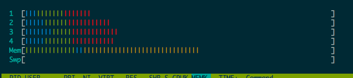
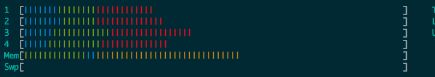
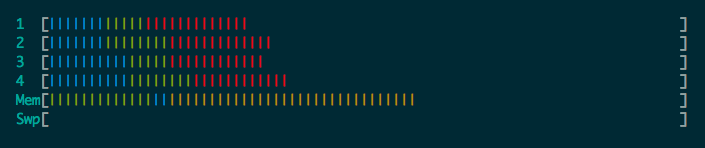
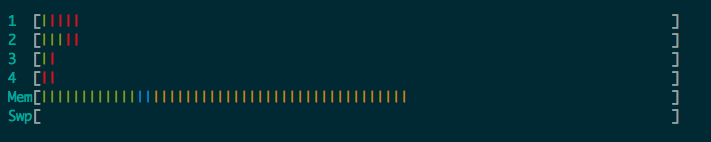
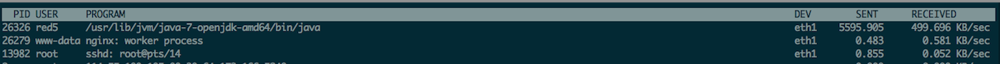

环境参数
服务器
- 阿里云
- ubuntu14.04 64bit
- 4核16G
- 带宽按流量计，100M
软件
bigbluebutton 1.0版
压力情况
- 29人同时加入一个会议室
- 24人同时开启麦克风和摄像头
- 持续时间1.5小时（19:00-20:30）
参数监控
首先我们给出正常运行时，服务器的压力情况
首先我们来看下cpu和内存使用情况:



从中可以看到cpu使用率在1/3左右，内存用了一半（8G，内存随人数的增加不明显）
这是人员退出后的cpu/内存情况，可以看到内存变化不大：

m/mMISmi 接着我们看下网络使用情况：

从中可以看出，输出流量稳定在5-6 m/s,输入保持在500k/s (24人同时在线,无卡顿)
遇到的问题与解决方案
问题
- safari会出现卡顿或退出，声音断续
- 无法将桌面布局同步到所有客户端(应该是软件问题,0.9版本正常)
解决方案
- 浏览器卡顿与退出问题,通过采用chrome内核的浏览器可以解决（firefox和高版本ie也表现良好）
- 无法同步所有客户端的问题，可以通过自建会议解决,详情请看后文
软件表现
- 在大多客户端下，视频和语音都正常
- ppt和即时消息都正常
- 投票功能正常
- 视频流畅，整体延迟在2秒以内，无卡顿
- 语音清晰
结论
- bigbluebutton在此次测试中表现优秀,可以完美支持小型会议
一些经验
- 浏览器需要支持flash，建议采用chrome内核的浏览器
- 会议开始，应该向简单介绍bigbluebutton的使用方法，包括如何打开麦克风和摄像头以及举手发言之类的规则
- 建议有个人负责给大家答疑，会议过程中与会者遇到使用问题应该即使给与解答，不影响会议主进程（可以建个qq群）
- 当有人发言时，应当选择
演讲者外全部话筒静音，否则可能有杂音 - 会议应该有个主控者，其他发言者通过举手发言,主控者可以在名字中标识,如
张三(主持人)
软件定制相关
- 可以根据会议情况，定制入口页面，文件地址为
/var/www/bigbluebutton-default，其中index.html修改即生效，而defautl.pdf是默认ppt，替换后需要sudo bbb-conf --clean生效 /var/lib/tomcat7/webapps/demo/demo1.jsp，修改即生效（修改api页面）/var/lib/tomcat7/webapps/demo/demo_header.jsp,修改banner/var/lib/tomcat7/webapps/demo/create.jsp，修改自建会议的入口页
技巧：在/var下使用grep "xxx" ./* -R搜索
自建会议
访问http://YOUR_HOST/demo/demo1.jsp，点击create，然后建立你自己的会议,诸如我们将会议起名为wwj_meeting
之后分享这个链接，其他人就能加入：http://YOUR_HOST/demo/create.jsp?action=invite&meetingID=wwj_meeting%27s+meeting
自动加入的方式（可用js）为http://YOUR_HOST/demo/create.jsp?username=小明&meetingID=wwj_meeting%27s+meeting&action=enter
在自建会议中，创建者默认设为主持人，话筒不会出现被抢夺情况
此外创建者可以同步页面给其他用户